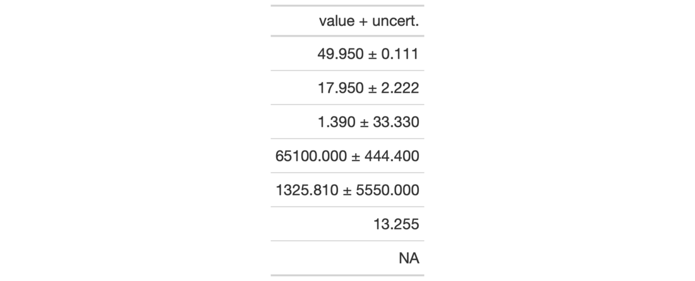

| cols_merge_uncert {gt} | R Documentation |
The cols_merge_uncert() function is a specialized variant of the
cols_merge() function. It operates by taking a base value column
(col_val) and an uncertainty column (col_uncert) and merges them into a
single column. What results is a column with values and associated
uncertainties (e.g., 12.0 ± 0.1), and, the column specified in col_uncert
is dropped from the output table.
cols_merge_uncert(data, col_val, col_uncert, sep = " +/- ", autohide = TRUE)
data |
A table object that is created using the |
col_val |
A single column name that contains the base values. This is the column where values will be mutated. |
col_uncert |
A single column name that contains the uncertainty values.
These values will be combined with those in |
sep |
The separator text that contains the uncertainty mark. The
default value of |
autohide |
An option to automatically hide the column specified as
|
This function could be somewhat replicated using cols_merge(), however,
cols_merge_uncert() employs the following specialized semantics for NA
handling:
NAs in col_val result in missing values for the merged
column (e.g., NA + 0.1 = NA)
NAs in col_uncert (but not col_val) result in
base values only for the merged column (e.g.,
12.0 + NA = 12.0)
NAs both col_val and col_uncert result in
missing values for the merged column (e.g., NA + NA =
NA)
Any resulting NA values in the col_val column following the merge
operation can be easily formatted using the fmt_missing() function.
This function is part of a set of four column-merging functions. The other
two are the general cols_merge() function and the specialized
cols_merge_range() and cols_merge_n_pct() functions. These functions
operate similarly, where the non-target columns can be optionally hidden from
the output table through the hide_columns or autohide options.
An object of class gt_tbl.

4-9
Other Modify Columns:
cols_align(),
cols_hide(),
cols_label(),
cols_merge_n_pct(),
cols_merge_range(),
cols_merge(),
cols_move_to_end(),
cols_move_to_start(),
cols_move(),
cols_unhide(),
cols_width()
# Use `exibble` to create a gt table,
# keeping only the `currency` and `num`
# columns; merge columns into one with
# a base value and uncertainty (after
# formatting the `num` column)
tab_1 <-
exibble %>%
dplyr::select(currency, num) %>%
dplyr::slice(1:7) %>%
gt() %>%
fmt_number(
columns = num,
decimals = 3,
use_seps = FALSE
) %>%
cols_merge_uncert(
col_val = currency,
col_uncert = num
) %>%
cols_label(
currency = "value + uncert."
)